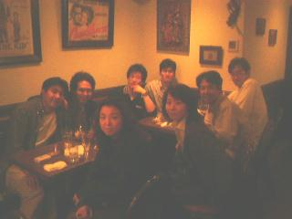

六次会です〜
新中野の「ウィッチ」。どうやらここで締めるというのが恒例になったようです。
しかし毎度のことながらこのヒト、ベロベロですなぁ。
渋谷のホテルマンも合流してたのね。。。
クぅ〜っ！この二人にはソソるなぁ。いーもんね、個人的に七次会のアポとっちゃうもんね。
もとのデジカメ画像が真っ暗だったので、俺の技術力では補正もこれがいっぱいっぱい。でもなんか印象派っぽくっていい絵ですなぁ。
ではでは！また次回！

おわり
更新：2000/05/21